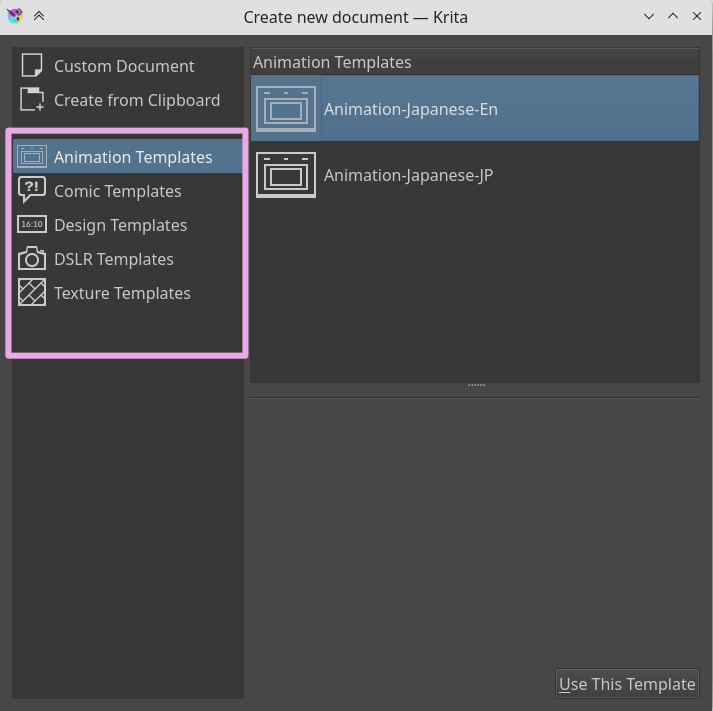

Templates¶
Templates are just .kra files which are saved in a special location, so it can be pulled up by Krita quickly. This is like the Open Existing Document as Untitled Document… but then with a nicer place in the UI.
You can make your own template file from any .kra file, by using menu item. This will add your current document as a new template, including all its properties along with the layers and layer contents.
We have the following defaults:
Comic Templates¶
These templates are specifically designed for you to just get started with drawing comics. The comic template relies on a system of vectors and clones of those vector layers which automatically reflect any changes made to the vector layers. In between these two, you can draw your picture, and not fear them drawing over the panel. Use Inherit Alpha to clip the drawing by the panel.
- European Bande Desinée Template.
This one is reminiscent of the system used by for example TinTin or Spirou et Fantasio. These panels focus on wide images, and horizontal cuts.
- US-style comics Template.
This one is reminiscent of old DC and Marvel Comics, such as Batman or Captain America. Nine images for quick story progression.
- Manga Template.
This one is based on Japanese comics, and focuses on a thin vertical gutter and a thick horizontal gutter, ensuring that the reader finished the previous row before heading to the next.
- Waffle Iron Grid
12 little panels at your disposal.
Design Templates¶
These are templates for design and have various defaults with proper PPI at your disposal:
Cinema 16:10
Cinema 2.93:1
Presentation A3-landscape
Presentation A4 portrait
Screen 4:3
Web Design
DSLR templates¶
These have some default size for photos:
Canon 55D
Canon 5DMK3
Nikon D3000
Nikon D5000
Nikon D7000
Texture Templates¶
These are for making 3D textures, and are between 1024, to 4092.